| 170214Feb 14 | Christina Kelly | | Partner Operations Manager | First Round Capital | Head Of Operations | Upside Partnership | will work with founders at the First Round Capital alumni founded seed investment fund - medium.com |
| 170214Feb 14 | Matt Idema | | VP Product Marketing | Facebook | COO | WhatsApp (Facebook) | first COO for WhatsApp, which was acquired by FB for $22B in 2014 - recode.net |
| 170214Feb 14 | Maria Renz | | VP, Technical Advisor to the CEO | Amazon | VP Delivery Experience | Amazon | moving on from sought-after position known as 'Shadow' to Jeff Bezos - recode.net |
| 170213Feb 13 | April Underwood | | VP Product | Slack | Member, Board of Directors | Zillow Group | keeping postion at Slack and cointinuing to invest through #Angels - zillowgroup.mediaroom.com |
| 170213Feb 13 | Pascale Diaine | | Lead Manager | Orange Fab | VC Principal | Storm Ventures | was the founder of telecom company Orange's startup accelerator program - venturebeat.com |
| 170210Feb 10 | Bryan Salesky | | Director, Hardware Development | Waymo (Google) | CEO | Argo AI | previously specialized in commercialization at CMU's RI - medium.com |
| 170210Feb 10 | Peter Rander | | Engineering Lead | Uber | COO | Argo AI | briefly consulted before joining the self-driving tech startup, also a CMU RI alumnus - recode.net |
| 170209Feb 9 | Casey Winters | | Product Lead, Growth | Pinterest | Growth Advisor in Residence | Greylock Partners | left Pinterest in September. Is also a 'growth advisor' to Reddit, Airbnb, and Pocket - news.greylock.com |
| 170209Feb 9 | Luc Vincent | | Senior Director of Engineering, Maps | Google | VP Engineering | Lyft | was head of Google Street View, at Google for over 12 years - theverge.com |
| 170209Feb 9 | Mina Lefevre | | EVP, Head of Scripted Programming | MTV Networks | Head of Development | Facebook | Maggie Malina, EVP and head of scripted at VH1 is expected to replace her - theverge.com |
| 170209Feb 9 | Brogan BamBrogan | | CTO, Co-founder | Hyperloop One | Arrivo | Arrivo | left Hyperloop last year, the lawsuit between them reached a settlement last November - techcrunch.com |
| 170209Feb 9 | Knut Sauer | | VP Business Development | Hyperloop One | Arrivo | Arrivo | left Hyperloop One after six months to co-found hyperloop company Arrivo - techcrunch.com |
| 170209Feb 9 | Jadon Smith | | Senior Engineer | SpaceX | Co-founder | Arrivo | left SpaceX after 10 years to join Arrivo's large co-founding team - fortune.com |
| 170208Feb 8 | Margo Georgiadis | | President, Americas | Google | CEO | Mattel | joined Google as Global Sales Operations VP in 2011, previously COO of Groupon - wsj.com |
| 170208Feb 8 | Carl Bass | | CEO, President | Autodesk | | | resigning effective immediately, has held various roles at Autodesk for past 24 years - blogs.autodesk.com |
| 170208Feb 8 | Amar Hanspal | | SVP Products | Autodesk | co-CEO | Autodesk | becoming interim co-CEO after CEO Carl Bass' departure - venturebeat.com |
| 170208Feb 8 | Andrew Anagnost | 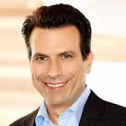 | CMO, SVP Business Strategy | Autodesk | co-CEO | Autodesk | becoming interim co-CEO after CEO Carl Bass' departure - recode.net |
| 170208Feb 8 | Laurent Balmelli | 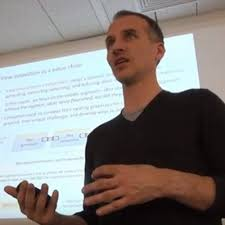 | CEO, Co-founder | Strong.Codes | Engineering Security | Snap | unclear whether Snap also acquired his Swiss-based software startup - bloomberg.com |
| 170208Feb 8 | Misha Bilenko | | Principal Researcher | Microsoft | Head of AI and Research | Yandex | leading newly-formed Machine Intelligence & Research (MIR) group - venturebeat.com |
| 170208Feb 8 | Tim Wan | | CFO | Apigee (Google) | CFO / Head of Global Finance | Asana | first in role, was Apigee's CFO though IPO to Google acquisition - blog.asana.com |
| 170208Feb 8 | Oliver Jay | | Head of APAC & LATAM | Dropbox | Global Head of Sales | Asana | first in role, previously head of Dropbox's inside and online sales - blog.asana.com |
| 170208Feb 8 | Timothy Twerdahl | | Director, GM FireTV | Amazon | VP, AppleTV | Apple | reports to Greg Joswiak, a VP in charge of marketing for the iPhone - bloomberg.com |
| 170207Feb 7 | Jeffrey Siminoff | | VP of Diversity & Inclusion | Twitter | | | hired from Apple to replace Janet Van Huysse. will depart at the end of the month - techcrunch.com |
| 170207Feb 7 | Renee Atwood | | Chief HR Officer | Twitter | | | joined from Uber last year, departing for personal reasons - techcrunch.com |
| 170207Feb 7 | Nicholas Jitkoff | | Principal Designer | Google | VP of Design | Dropbox | led design for Material Design, spent ten years at Google - blogs.dropbox.com |
| 170207Feb 7 | Ryan Sims | | Director of Product Design | Nextdoor | Design Team | Stripe | joining Stripe's design team after almost 5 years at Nextdoor - twitter.com |
| 170206Feb 6 | Mark Moore | | CTO, On-Demand Mobility | NASA | Engineering Director of Aviation | Uber | the 32-year NASA veteran and VTOL (flying car) pioneer will lead Uber Elevate - bloomberg.com |
| 170206Feb 6 | Kayvon Beykpour | | CEO, Co-founder | Periscope (Twitter) | Product Head, Live Video | Twitter | expanded role leading product and eng for all live video in addition to Periscope - venturebeat.com |
| 170203Feb 3 | Aamir Virani | | Senior Product Marketing Manager | Nest (Google) | VC Partner | Felicis Ventures | was Co-founder and COO of Dropcam, acquired by Google in 2014 - techcrunch.com |
| 170203Feb 3 | Francoise Brougher | | Business Lead, Head of Sales & International | Square | | | most of her role will be taken over by CMO Kevin Burke - recode.net |
| 170203Feb 3 | Josh Miller |  | Director of Product | The White House | VC Entrepreneur in Residence | Thrive Capital | joined WH from Facebook late 2015, joining NYC-based firm led by Joshua Kushner - medium.com |
| 170203Feb 3 | Todd Stumpf | | Software Engineer | Twitter | Digital Services Expert | USDS Department of Education | working in Department of Education, previously at Google, based in Seattle - medium.com |
| 170203Feb 3 | Jonathan Sullivan | | VP, Chief Digital Officer | The Health Management Academy | Digital Services Expert | US Digital Service | focused on product strategy for taxpayer-facing healthcare programs, based in DC - medium.com |
| 170203Feb 3 | Erin Delaney | | Trust and Safety | Dropbox | Defense Digital ServicesExpert | US Digital Defense Service | joining Defense Digital Service at the Pentagon, relocating from SF - medium.com |
| 170202Feb 2 | Ari Jaaksi | | Director of Products, Connected Devices | Mozilla | | | part of a 50 employee layoff as Mozilla eliminates its connected devices team - cnet.com |
| 170202Feb 2 | Bertrand Neveux | 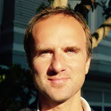 | SVP, Connected Devices | Mozilla | | | part of a 50 employee layoff as Mozilla eliminates its connected devices team - cnet.com |
| 170202Feb 2 | Andrea Frome | | Senior Software Engineer | Hillary for America | Director of Research | Clarifai | previously a Staff Software Engineer on Google Brain, Berkeley CS PhD - recode.net |
| 170202Feb 2 | Matt Molinari | | VP Business Development | Indeed | VP Business Development | Clarifai | spent almost 10 years at Indeed - recode.net |
| 170202Feb 2 | Claire Geist | | Image Curator | Twitter | Data Strategist | Clarifai | was part of Twitter Cortex team, based in NYC. also runs DeLuneBlog.com - recode.net |
| 170202Feb 2 | Karen Herder | | AI Curator, Image Curator | Twitter | Data Strategist | Clarifai | was part of Twitter Cortex team, based in NYC - recode.net |
| 170202Feb 2 | Minh Tran | | AI Curator | Twitter | Data Strategist | Clarifai | was part of Twitter Cortex team, based in NYC - recode.net |
| 170202Feb 2 | Michael Tolbert | | AI Curator | Twitter | Data Strategist | Clarifai | was part of Twitter Cortex team, based in NYC - recode.net |
| 170202Feb 2 | Travis Kalanick | 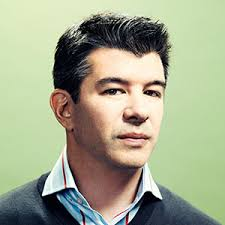 | Economic Advisory Council Member | President's Strategic and Policy Forum | CEO | Uber | leaving after internal pressure and public criticism of perceived complicty with Trump - nytimes.com |
| 170202Feb 2 | Simon Favreau-Lessard | | Principal Software Engineer | Foursquare | Senior Software Engineer | Slack | departing after over 5 years at Foursquare, previously at Google. - twitter.com |
| 170202Feb 2 | Carl Schachter | | VP, Google Cloud | Google | | | departing after a reorg, previously spent 12 years at Salesforce - theinformation.com |
| 170201Feb 1 | Eric Grosse |  | Head of Security and Privacy | Capital G (Alphabet)Google | | | retiring after a decade at Google - recode.net |
| 170131Jan 31 | Jim Goetz | | Partner, Sequoia 'Steward' | Sequoia Capital | | | says he will return. to be succeeded by Roelof Botha (& Alfred Lin) as head of US VC - axios.com |
| 170131Jan 31 | Roelof Botha | | VC Partner | Sequoia Capital | Partner, 'Sequoia Steward' | Sequoia Capital | is succeeding Jim Goetz as a leader of the firm's US VC operations - wsj.com |
| 170131Jan 31 | Alfred Lin | | VC Partner | Sequoia Capital | Partner, Co-lead of US VC | Sequoia Capital | stepping up to wider leadership role as Jim Goetz steps back - wsj.com |
| 170130Jan 30 | Rashaun Williams | 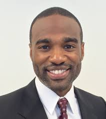 | Founding General Partner | QueensBridge Venture Partners | VC General Partner, All Star Fund | Manhattan Venture Partners | bringing experience with influencers to a new secondary investment fund - techcrunch.com |
| 170127Jan 27 | Chris Lynch | | VC General Partner, Co-founder | Accomplice VC | | | no longer making investments for the Boston-based VC as it expands to SF - axios.com |
| 170126Jan 26 | Hugo Barra | | VP International | Xiaomi | VP VR (Oculus) | Facebook | relocating from China. previously Android VP at Google - facebook.com |
| 170125Jan 25 | Greg Duffy | | Senior Product Manager | Nest (Google) | Unknown | Apple | was co-founder of Dropcam, acquired by Google in 2014 - theinformation.com |
| 170124Jan 24 | Kevin Scott | | SVP Infrastructure | LinkedIn | CTO | Microsoft | expanding his role after MS acquired LinkedIn, will report directly to CEO Satya Nadella - news.microsoft.com |
| 170124Jan 24 | Brian Hall | | Corporate VP, Microsoft Devices | Microsoft | COO | Doppler Labs | departing MS after 22 years to lead AirPod competitor Here One - markets.businessinsider.com |
| 170124Jan 24 | Ted Wang | | Lawyer, Partner | Fenwick & West, LLP | VC General Partner | Cowboy Ventures | the prominent tech startup lawyer will be Cowboy's first GP - blog.cowboy.vc |
| 170123Jan 23 | Musa Tariq | | Director, Global Marketing and Communications | Apple | VP, Chief Brand Officer | Ford Motor Company | will move to Detroit for the role. Previously at Nike and Burberry - media.ford.com |
| 170123Jan 23 | Vishal Kaul | | GM, Thailand, Myanmar, Laos | PepsiCo | COO | Ola | replacing Pranay Jivrajka, who will become founding partner of India's Uber competitor - timesofindia.indiatimes.com |
| 170123Jan 23 | Yoky Matsuoka | | Executive, Apple Health | Apple | CTO | Nest (Alphabet) | returning to Nest after a brief stint at Apple - bloomberg.com |
| 170123Jan 23 | Quentin Hardy | | Deputy Tech Editor | New York Times | Head of Editorial, Google Cloud | Google | a new role, includes G Suite and Google Cloud Platform - recode.net |
| 170123Jan 23 | Bryan Roper | | Windows spokesperson | Microsoft | | | semi-famous presenter known as 'fedora guy' impacted by recent round of 700 layoffs - theverge.com |
| 170120Jan 20 | Luciana Lixandru | | VC Principal | Accel Partners | VC Partner | Accel Partners | based in London, investments include Deliveroo, Wallapop, Avito, Catawiki - techcrunch.com |
| 170120Jan 20 | Amit Singhal | | SVP Engineering, Head of Search, Google Fellow | Google | SVP Engineering | Uber | left Google after 15 years last February, was presumed to be retiring - newsroom.uber.com |
| 170120Jan 20 | Kevin Thompson | | VP Engineering | Google | VP of Marketplace Engineering | Uber | left Google after 12 years, most recently leading YouTube Ads - techcrunch.com |
| 170119Jan 19 | Sarah Heck | | Director for Global Engagement, Nat'l Security Council | US Government | Head of Partnerships and External Affairs | Stripe | was Obama's lead advisor for global entrepreneurship. will focus on Stripe Atlas - businessinsider.com |
| 170119Jan 19 | Jim Steele |  | CRO, President | InsideSales.com | CRO, President | Yext | hire comes before Yext's presumed upcoming IPO - prnewswire.com |
| 170118Jan 18 | Matt Cutts | | Head of Webspam | Google | Director of Engineering | US Digital Service | will become acting administrator. resigning from Google after extending a temporary stint in DC - mattcutts.com |
| 170118Jan 18 | Dan Springer | | CEO, Chairman | Responsys | CEO | DocuSign | former CEO Keith Krach is moving to a chairman role. - fortune.com |
| 170118Jan 18 | Jennifer Park Stout | | Deputy Chief of Staff to Secretary of State | US State Department | Head of Global Public Policy | Snap | another political veteran hire as Snap strengthens its ties in Washington - cnbc.com |
| 170118Jan 18 | Nefi Alarcon | | Associate Producer | Fox News Channel | Media Relations Manager | Mozilla | was an AP for Fox News Sunday, previously at CNN - twitter.com |
| 170116Jan 16 | Qi Lu | | EVP, Applications and Services | Microsoft | COO, Group President, AI | Baidu | Lu left Microsoft last year on medical leave after a cycling accident - techcrunch.com |
| 170113Jan 13 | Michael Lynton | | CEO | Sony Entertainment | Chairman | Snap | joined Snap's board in 2013. will leave in February but remain co-CEO for 6 more months - reuters.com |
| 170113Jan 13 | Ricardo Reyes | | VP Global Communications | Tesla | Global Communications Officer | Dyson | previously a PR and communications exec at Square and YouTube/Google - bloomberg.com |
| 170112Jan 12 | Artem Fishman | | VP Engineering, | Yahoo | CTO | SoundCloud | was head of engineering for Yahoo Finance. relocating from NYC to Berline - twitter.com |
| 170112Jan 12 | Eric Wahlforss | | CTO, Co-founder | SoundCloud | Chief Product Officer, Co-founder | SoundCloud | Artem Fishman joining to take over as CTO. Will be based in Berlin. - techcrunch.com |
| 170111Jan 11 | Laura Weidman Powers | | Senior Policy Advisor | White House OSTP | CEO, Co-founder | CODE2040 | returning to CODE2040 after completing a 6 month term advising the US CTO - twitter.com |
| 170111Jan 11 | Rick Stengel |  | Under Sec. State for Public Diplomacy, Public Affairs | US State Department | Senior Advisor | Snap | previously CEO of the National Constitution Center and managing editor of Time magazine - heatst.com |
| 170111Jan 11 | Julie Hansen | | President, COO | Business Insider | CEO, US | Babbel | after 8 years at BI, leaving to lead US expansion of the language learning co. - linkedin.com |
| 170110Jan 10 | Ellen Pao | | Interim CEO | Reddit | VC Partner, Chief Diversity & Inclusion Officer | Kapor Capital / Center for Social Impact | is also former VC and co-founder of diversity non-profit Project Include - twitter.com |
| 170110Jan 10 | Chris Lattner | | Senior Director, Developer Tools Department | Apple | VP Autopilot Software | Tesla | is author of LLVM and creator of Swift. - tesla.com |
| 170110Jan 10 | Daniel Gross | | CEO, Co-founder | Cue (acquired by Apple) | VC Partner | Y Combinator | is also an angel investor and YC alum (his startup Greplin was renamed to Cue) - blog.ycombinator.com |
| 170110Jan 10 | Nicole Cadman | | Associate | Orrick, Herrington & Sutcliffe LLP | Associate General Counsel | Y Combinator | was a Managing Associate in Orrick’s Tech Group and Stanford Law grad - blog.ycombinator.com |
| 170110Jan 10 | Libby Watson | | Staff Writer | Sunlight Foundation | Journalist, Tech Policy | Gizmodo | crowdfunded to stay in the US when confronted with losing her H1B visa - twitter.com |
| 170110Jan 10 | David Plouffe | | SVP Policy and Strategy | Uber | President of Policy and Advocacy | Chan Zuckerberg Initiative | best known as the manager of Obama's 2008 presidential campaign. will remain on Uber's board - nytimes.com |
| 170110Jan 10 | Frank Calderoni | | CFO, EVP, Operations | RedHat | CEO | Anaplan | hire comes before Anaplan's presumed upcoming IPO - businessinsider.com |
| 170110Jan 10 | Jocelyn Goldfein | | Engineering Director | Facebook | VC General Partner, Managing Director | Zetta Venture Partners | left Facebook in 2014 and made angel investments in the interim - fortune.com |
| 170110Jan 10 | John MacFarlane | | CEO, Co-founder | Sonos | | | will remain an employee but giving up his board seat after 14 years leading Sonos - nytimes.com |
| 170110Jan 10 | Patrick Spence | | Chief Commercial Officer, President | Sonos | CEO | Sonos | taking over for John MacFarlane, may lead company to an IPO - nytimes.com |
| 170109Jan 9 | Mike Dempsey | | VC Investor | Rothenberg Ventures | VC Principal | Compound | Compound recently raised a new fund and rebranded from Metamorphic Ventures - medium.com |
| 170107Jan 7 | Chris Messina | | Developer Experience Lead | Uber | | | departing Uber after exactly one year, taking time off to find a new role - medium.com |
| 170106Jan 6 | Campbell Brown | | Co-founder | The 74 | Head of News Partnerships | Facebook | Brown is also an education activist and Emmy-winning journalist, NBC co-anchor, CNN news host - facebook.com |
| 170105Jan 5 | Saul Carlin | | Head of Publisher Development | Medium | | | leaving amid Medium's layoffs of about 50 employees - niemanlab.org |
| 170104Jan 4 | Ralph Diaz | | Global Director of Retail Operations | Oakley | Head of Retail Store Operations | Snap | joining Snap after over 15 years at Oakley, beginning in its warehouse - twitter.com |
| 170104Jan 4 | Tom Dale | | Co-founder | Tilde | Engineering, Web Applications | LinkedIn | one of the creators of the JavaScript framework Ember.js - tomdale.net |
| 170103Jan 3 | Scott Dadich | 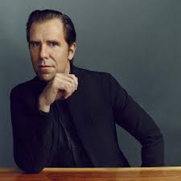 | Editor in Chief | Wired | | | spent 11 years at Conde Nast. Will be replaced by the New Yorker's Nicholas Thompson - money.cnn.com |
| 170103Jan 3 | Gene Munster | | Research Analyst | Piper Jaffray | VC Managing Partner, Founder | Loup Ventures | 21-year Piper veteran known for covering Apple and Alphabet - techcrunch.com |
| 170101Jan 1 | Kathy Chen | | Managing Director, China | Microsoft | | | joined from Microsoft 8 months ago, says she will take time off. - recode.net |
| 161229Dec 29 | Jason Shellen | | Head of Product, Platform | Slack | | | joined Slack in February - recode.net |
| 161222Dec 22 | Othman Laraki | | President, Co-founder | Color Genomics | CEO | Color Genomics | CEO Elad Gil is becoming the chairman and co-founder Othman Laraki is now CEO - recode.net |
| 161221Dec 21 | Josh McFarland | | VP Product | Twitter | VC Partner | Greylock Partners | previously Co-Founder & CEO of Twitter-acquired TellApart and an EIR at Greylock - news.greylock.com |
| 161221Dec 21 | Matt Rosoff | | Executive Editor, Tech | Business Insider | Editorial Director | CNBC Digital | newly-created position. He will lead digital’s technology coverage based in SF - talkingbiznews.com |
| 161220Dec 20 | Adam Messinger | | CTO | Twitter | | | plans to take time off after 5 years at Twitter. responsibilites will be filled by Eng VP Edward Ho - twitter.com |
| 161219Dec 19 | Janice Fraser | | Director, People Team | Pivotal | Senior Vice President | Bionic Solution | Bionic is an enterprise growth platform - twitter.com |
| 161219Dec 19 | George A. Polisner | | Director, Managed Cloud Services | Oracle | | | resigned in protest of Oracle co-CEO Safra Catz joining the Trump Transition Team - techcrunch.com |
| 161215Dec 15 | Safra Catz | | CEO | Oracle | Executive Committee, Transition Team | Trump Administration | will remain CEO and Board member - fortune.com |
| 161215Dec 15 | Kia Kokalitcheva | | Reporter, Staff Writer | Fortune | Technology Reporter | Axios | previously covered Silicon Valley startups at VentureBeat - talkingbiznews.com |
| 161215Dec 15 | Keith McCarty | | CEO | Eaze | | | Chief Product and Technology Officer Jim Patterson will take on CEO role - eaze.com |
| 161214Dec 14 | Andy Fouché | | VP Public Relations and Government Affairs | Magic Leap | Head of Communications | Playground | is joining Andy Rubin's stealth startup - techcrunch.com |
| 161214Dec 14 | Kevin Zhang | | VC Principal | Upfront Ventures | VC Partner | Upfront Ventures | joined as an Associate in 2012 - bothsidesofthetable.com |
| 161213Dec 13 | Pete Flint | | CEO, Founder | Trulia (Zillow) | VC Managing Partner | NFX Guild | advised startups and venture firms in interim - medium.com |
| 161213Dec 13 | Brendan Iribe | | CEO, Co-founder | Oculus (Facebook) | Head of PC VR | Facebook | role for leader of the Oculus team is now open - oculus.com |
| 161213Dec 13 | Jon Thomason | | VP, Mobile Shopping | Amazon | Head of Mobile VR | Facebook | joined Facebook as Head of Software in August after 7 months at Amazon - oculus.com |
| 161213Dec 13 | Janet Ikpa |  | Diversity Strategist & Program Manager | Twitter | Senior Manager, Diversity, Equity and Inclusion | Hired | led Engineering University Programs at Twitter and Google prior to diversity focus - twitter.com |
| 161212Dec 12 | Jacob Mullins | | CEO, Founder | Exitround | VC Principal | Shasta Ventures | will focus investing in the future of VR, AR and other emerging platforms - medium.com |
| 161212Dec 12 | Matt Galligan | | CEO, Co-founder | Circa | VP Product Design | Postmates | did product design consulting in interim - hackernoon.com |
| 161212Dec 12 | Brett Browning | | Senior Engineering Manager, ATC | Uber | | | was head of mapping for Uber's ATC. Previously at CMU Robotics Institute - recode.net |
| 161212Dec 12 | Drew Bagnell | | Engineering Manager, ATC | Uber | | | head of autonomy and perception team, previously at Carnegie Mellon's Robotics Institute - recode.net |
| 161212Dec 12 | Peter Rander | | Engineering Lead | Uber | Consultant, robotics & self-driving technology | | specialized in the commercialization of Uber's self-driving car, also recruited from CMU - recode.net |
| 161212Dec 12 | Nancy Lee | | VP People Operations | Google | | | was head of Diversity & Inclusion. At Google since 2006, beginning as Corporate Counsel. - techcrunch.com |
| 161211Dec 11 | Sinead McSweeney | | VP, Public Policy and Communications, EMEA | Twitter | Managing Director, Twitter Dublin | Twitter | joined Twitter as EMEA-focused director in 2012 - twitter.com |
| 161209Dec 9 | Adam Sharp | | Director, Media Partnerships; Head of News/Gov't/Elections | Twitter | | | will take time off after 6 years at Twitter - twitter.com |
| 161208Dec 8 | Sean Rad |  | CEO, Co-founder | Tinder | Chairman | Swipe Ventures | will be replaced by Match CEO Greg Blatt and continue as Chairman of Tinder - techcrunch.com |
| 161208Dec 8 | Gilad Lotan | | Chief Data Scientist | Betaworks | VP, Head of Data Science | BuzzFeed | new role at BuzzFeed, will work with Publisher Dao Nguyen - techcrunch.com |
| 161208Dec 8 | David Ulevitch | | CEO, Founder | OpenDNS | VP, Security Business Group | Cisco | taking on a larger role following Cisco's acquisition of OpenDNS - twitter.com |
| 161208Dec 8 | Parker Barrile | | Chief Product Officer | Prosper Marketplace | VC Partner | Norwest Venture Partners | joining Internet & Consumer team, interested in health and fitness investments - techcrunch.com |
| 161207Dec 7 | Susan Wu | | Head of Stripe Australia | Stripe | | | is also an angel investor and startup adviser - medium.com |
| 161207Dec 7 | Danny Lange | | Head of Machine Learning | Uber | VP of AI and Machine Learning | Unity Technologies | previously at Amazon and Microsoft - techcrunch.com |
| 161207Dec 7 | Nicole St.Jean | | Head of Music Industry Relations | Twitter | VP Content | 8i | 8i is a holographic technology startup based in NZ and LA - medium.com |
| 161206Dec 6 | Anil Dash | | CEO, Co-founder | Makerbase | CEO | Fog Creek Software | Dash is also a prolific blogger - anildash.com |
| 161205Dec 5 | Gary Marcus | | CEO, Co-founder | Geometric Intelligence | Co-Director, AI Lab | Uber | joining through acquisition, will co-lead Uber's new AI research arm focusing on self-driving technology - nytimes.com |
| 161205Dec 5 | Zoubin Ghahramani | | Co-founder, Chief Science Officer | Geometric Intelligence | Co-Director, AI Lab | Uber | joining through acquisition, will co-lead Uber's new AI research arm focusing on self-driving technology - nytimes.com |
| 161202Dec 2 | Richard Alfonsi | | VP Global Online Sales | Twitter | Head of Global Revenue & Growth | Stripe | will report to COO Claire Hughes Johnson, also previously at Google - twitter.com |
| 161201Dec 1 | Keith Coleman | | CEO | Yes Inc. | VP Product | Twitter | joining Twitter along with six others from the startup Yes Inc. - yesitsyes.com |
| 161201Dec 1 | Zaheda Bhorat | | Director of Open Source Strategy and Programs | Salesforce | Head of Open Source Strategy | Amazon AWS | "previously at Google & Apple. will work with VP Cloud Architecture Strategy Adrian Cockcroft
" - fortune.com |
| 161116Nov 16 | Brian Larson | | Principal Software Engineer | Twitter | | | was at Twitter for six years, previously Google for six years - twitter.com |
| 161109Nov 9 | Adam Bain | | COO | Twitter | | | stepping down after 6 years, will be replaced by CFO Anthony Noto - nytimes.com |
| 161108Nov 8 | Anne Toth | | VP People & Policy | Slack | | | previously Head of Privacy for Google+ and Chief Trust Officer at Yahoo - businessinsider.com |
| 161108Nov 8 | Mark Lawson | | Creative Director | Slack | | | now a freelance creative director - businessinsider.com |
| 161104Nov 4 | Meredith Brace | | SVP Sales, National Sponsorships | true[x] | SVP Digital and Non-linear Sales | Fox Networks Group | previously Global Media director at Microsoft, HP - adage.com |
| 161104Nov 4 | Charles Race | | EVP, Worldwide Field Operations | Informatica | President of Worldwide Field Operations | Okta | took a sabbatical after spending 10 years at Informatica. Will report to to CEO Todd McKinnon - okta.com |
| 161103Nov 3 | Brian Wallace | | CMO Chief Marketing Officer | Magic Leap | Unknown | Playground | joined in April 2014. Previously at Samsung, BlackBerry, and Google. - bloomberg.com |
| 161103Nov 3 | Bill Macaitis | | CMO, CRO | Slack | | | plans to move into formal advisor and board member roles - businessinsider.com |
| 161101Nov 1 | Tim A. Miller | | Senior Director, Engineering | Flickr (Yahoo) | VP Engineering | Quizlet | at Flickr since 2011, is now actively hiring for the education startup - medium.com |
| 161027Oct 27 | J Crowley | | Head of Product | Foursquare | Product | Blue Apron | brother of Foursquare founder Dennis Crowley, was at Foursquare since 2010 - blueapron.com |
| 161025Oct 25 | Craig Barratt | | SVP, CEO of Access (Google Fiber) | Alphabet (Google) | | | will stay on as adviser, replacement not named - recode.net |
| 161025Oct 25 | Noam Lovinsky | | Director of Product Management | YouTube (Google) | VP Product | Thumbtack | previously at YouTube for 6 years after it acquired his startup, Episodic - medium.com |
| 161024Oct 24 | Kira Wampler | | CMO Chief Marketing Officer | Lyft | CEO | Art.com | Also joining Board of Directors. Previously CMO of Trulia before joining Lyft in 2014 - thestreet.com |
| 161024Oct 24 | Brandon McCormick |  | VP Communications | Lyft | | | Joined from Facebook. Taking personal time. Sheila Bryson will take over comms. - recode.net |
| 161023Oct 23 | Lou Moore | | VP Software Engineering | Jawbone | CTO | Code for America | will build a technical team as the organization expands its product portfolio - medium.com |
| 161020Oct 20 | Raj Kapoor | | VC Investor | Mayfield Fund | CSO Chief Strategy Officer | Lyft | was also an investor and early Board member of Lyft / Zimride - blog.lyft.com |
| 161020Oct 20 | Melissa Waters | | VP Brand and Product Marketing | Pandora | VP Marketing | Lyft | will be replacing previous CMO Kira Wampler - blog.lyft.com |
| 161020Oct 20 | Jess Lee | | CEO | Polyvore | VC Investment Partner | Sequoia Capital | departing after Yahoo (who acquired Polyvore for $230M last year) is acquired by Verizon - bloomberg.com |
| 161018Oct 18 | Carolyn Feinstein | | SVP, Global Marketing | EA | CMO | Dropbox | was also GVP, Consumer Marketing in 16+ year tenure at EA - blogs.dropbox.com |
| 161018Oct 18 | David Vos | 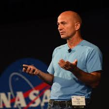 | Head of Project Wing | Google [X], Alphabet | | | Google X CEO Astro Teller will fill in during the search for a permanent leader - marketwatch.com |
| 161017Oct 17 | Russ Salakhutdinov | | Professor, Computer Science, Machine Learning | Carnegie Mellon University | Director AI Research | Apple | will continue work at CMU - twitter.com |
| 161013Oct 13 | Brent Callinicos | | CFO | Uber | CFO | Hyperloop One | left Uber in 2015. previously Google's VP, Treasurer & Chief Accountant - theverge.com |
| 161013Oct 13 | Kellan Elliott-McCrea | | CTO | Etsy | SVP, Engineering | Blink Health | Michael Thomas will remain CTO - techcrunch.com |
| 161011Oct 11 | Brian Pinkerton | | GM, Engineering VP Search | A9.com (Amazon) | CTO | Chan Zuckerberg Initiative | hired to build a team to apply engineering to CZI philanthropic ventures including BioHub - facebook.com |
| 161011Oct 11 | Rachel Rubin Franklin | | EP, VP, GM, Maxis | EA | Head of Social VR | Facebook | was an executive on the studio running the blockbuster game The Sims - techcrunch.com |
| 161010Oct 10 | Rishi Garg | | VP Corporate Development and Strategy | Twitter | VC Investment Partner | Mayfield Fund | Garg also previously ran M&A at Square. - wsj.com |
| 161010Oct 10 | Kirt McMaster | | CEO | Cyanogen | | | departing amid reports the company falsified its metrics. Will be replaced by COO Lior Tal. - techcrunch.com |
| 161005Oct 5 | Andy Sparks | | COO, Co-founder | Mattermark | | | says he plans to found another startup - medium.com |
| 161004Oct 4 | Todd Morgenfeld | | VP Finance | Twitter | CFO | Pinterest | first in CFO role - wsj.com |
| 161003Oct 3 | David Foster | | VP Hardware Engineering | Amazon (Kindle, Lab126) | VP Product Engineering, Hardware | Google | will work on Google smartphones and report to ex-Motorola president Rick Osterloh - theinformation.com |
| 160929Sep 29 | Camille Ricketts | | VC Head of Content and Marketing | First Round Capital | Digital Services Expert | Government US Digital Service | will be based in Washington DC for a short-term position with the White House USDS - twitter.com |
| 160929Sep 29 | Saam Motamedi | | Co-founder | Guru Labs | VC Investor | Greylock Partners | will focus on enterprise applications, big data, AI and vertical SaaS - news.greylock.com |
| 160928Sep 28 | Lyor Cohen | | CEO, Founder | 300 Entertainment | Global Head of Music | YouTube | the veteran music industry exec previously led Def Jam and Warner Music Group - engadget.com |
| 160926Sep 26 | Nick Bartle | | VP Member Marketing & Communications | LinkedIn | CMO | Pandora | second in the role, replacing Simon Fleming-Wood, previously at Apple - venturebeat.com |
| 160923Sep 23 | Andrew Adashek | | Head of Television | Twitter | | | taking time off after 4 years at Twitter, based in LA - techcrunch.com |
| 160923Sep 23 | Marcus Mabry | | US Curation Lead, Twitter Moments | Twitter | | | Previously an editor at New York Times and Newsweek - techcrunch.com |
| 160921Sep 21 | Navid Hadzaad | | CEO, Founder | Angel.ai | Product Manager, Consumer Engagement | Amazon | he is joining Amazon as an employee, not through an acquisition of his startup, - venturebeat.com |
| 160921Sep 21 | Jennifer Nuckles | | CMO Chief Marketing Officer | Zynga | CMO Chief Marketing Officer | Doctor on Demand | is also an advistor to VC Cowboy Ventures - businesswire.com |
| 160920Sep 20 | Jack Krawczyk | | VP Product | Pandora | VC Entrepreneur in Residence - EIR | Accel | will focus on product, labor and workforce market, and machine learning - medium.com |
| 160920Sep 20 | Ruben Ortega | | CTO | Allen Institute for AI | Engineering Site Lead, Seattle | Pinterest | previously an engineering leader at Nordstrom and Google - techcrunch.com |
| 160919Sep 19 | Manju Rajashekhar | | CTO, Co-founder | Blackbird | Engineering | Etsy | will join as part of Etsy's acquisition of his AI search startup - twitter.com |
| 160914Sep 14 | Denise Peng | | COO and EVP, Business Development | Qunar.com | VC Venture Partner | GGV Capital | will be based in Beijing - medium.com |
| 160914Sep 14 | Flint Waters | | CIO | Wyoming (US state) | Google for Work | Google | led several cloud migration projects for the Wyoming state government, to services from Google and Microsoft - blogs.wsj.com |
| 160913Sep 13 | Jason Costa | | Product Manager | Pinterest | EIR | GGV Capital | previously worked at Twitter and Google - medium.com |
| 160913Sep 13 | Semil Shah | | General Partner, Investor | Haystack | VC Venture Partner | GGV Capital | has been with GGV for some time, despite late announcement - blog.semilshah.com |
| 160911Sep 11 | Rob Pardo | | Chief Creative Officer & Lead Designer, World of Warcraft | Blizzard Entertainment | CEO | Bonfire Studios | After 17 years at Blizzard, leading a new gaming startup, based in Irvine, California with $25M in funding - nytimes.com |
| 160909Sep 9 | Patrick McKenzie | | Startup founder | Kalzumeus | Content & Communications | Stripe | will work on Atlas and based in Japan - kalzumeus.com |
| 160908Sep 8 | Gen. Gregory Touhill | | Dep. Asst. Secretary Cybersecurity & Communications | US Dept of Homeland Security | Chief Information Security Officer | US Federal Government | first in role, will report to federal CIO Tony Scott. Touhill is a retired Air Force General - fortune.com |
| 160907Sep 7 | Kristy Tillman | 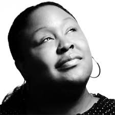 | Design Director | Society of Grownups | Head of Communication Design | Slack | previously designer at IDEO and co-founder Detroit Water Project - medium.com |
| 160907Sep 7 | Kristin Binns | | VP Public Relations | Anthem | Senior Director, Communications | Twitter | will report to CMO Leslie Berland, replacing Natalie Kerris - recode.net |
| 160907Sep 7 | Kevin Hartz | | CEO, Co-founder | Eventbrite | VC Partner | Founders Fund | replaced as CEO by Julia Hartz - wsj.com |
| 160906Sep 6 | Li Fan |  | Senior Director of Engineering | Google | Head of Engineering | Pinterest | was former head of image search at Google - techcrunch.com |
| 160901Sep 1 | Holly Lim | | ATAP and Business Operations, Cloud Platform & NetOps | Google | CFO | SoundCloud | first in the role, will report to CEO Alex Ljung and split time between Berlin and New York - venturebeat.com |
| 160901Sep 1 | Marcos Campos | | Head of Applied Machine Learning | Uber | Head of Artificial Intelligence | Bonsai AI | Bonsai pitches itself as a platform that makes it easy to integrate machine learning into apps - recode.net |
| 160830Aug 30 | Jeff Jones | | CMO Chief Marketing Officer | Target | President | Uber | will head worldwide marketing and operations and replace Ryan Graves on the Board. - fortune.com |
| 160829Aug 29 | Morgan Housel | | Columnist | The Motley Fool | VC Partner | Collaborative Fund | will be writing and speaking about business and investing - collaborativefund.com |
| 160826Aug 26 | Shaun Stewart | | Global Head of Vacation Rentals | Airbnb | Director, Self-driving car unit | Google X | will help commercialize Google’s self-driving technology - recode.net |
| 160826Aug 26 | Melissa Mandelbaum | | Product Design Director | Percolate | Product Designer | Dropbox | based in SF, fomer architect - medium.com |
| 160823Aug 23 | Tom Moore | | SVP | ViaSat | VP, Project Loon | Google X (Alphabet) | will replace Mike Cassidy on Project Loon - recode.net |
| 160819Aug 19 | Sharon Howell Pope | | Chief Marketing Officer | Green Dot Corporation | Head of Programs & Marketing | Y Combinator | will lead programs and marketing for the recently-formed YC Continuity Fund - blog.ycombinator.com |
| 160819Aug 19 | Vanessa Wittman | | CFO | Dropbox | | | leaving due to health reasons, will be replaced by Ajay Vashee - recode.net |
| 160818Aug 18 | John Maeda | | VC Design Partner | Kleiner Perkins Caufield & Byers (KPCB) | Global Head, Computational Design and Inclusion | Automattic | previously MIT Media lab professor and RISD President - wired.com |
| 160818Aug 18 | Christian Wilson | | Divisional CTO | Zynga | VP Engineering | Lumos Labs (Lumosity) | previously VP Core Services Engineering at KIXEYE - businesswire.com |
| 160817Aug 17 | Daphne Koller | | Co-founder | Coursera | Chief Computing Officer | Calico (Alphabet) | will focus on developing new technology for Calico's mission to tackle aging - blog.coursera.org |
| 160817Aug 17 | Kate Brodock | | CMO Chief Marketing Officer | Untapt | CEO | Women 2.0 | will maintain her position at Untapt - women2.com |
| 160817Aug 17 | Elisa Miller-Out | | Co-founder | CourseQ | COO | Women 2.0 | will maintain her position at CourseQ - women2.com |
| 160814Aug 14 | Kathy Chen | | GM General Manager, VP Greater China Region | Microsoft | MD Managing Director, China | Twitter | will head Greater China Region despite Twitter's continued ban in Mainland China - reuters.com |
| 160812Aug 12 | Sean Percival | | VC Partner | 500 Startups | | | Was focused on Nordic region - 500.co |
| 160812Aug 12 | Adam Selipsky | | VP Marketing, Sales & Support, AWS | Amazon | CEO | Tableau Software | joined AWS in 2005, worked alongside its CEO Andy Jassy - theinformation.com |
| 160812Aug 12 | Sachin Ranchod | | Business Development | GitHub | Partner Engineer, Developer Relations | Slack | previously Director of Sales Engineering, EMEA at GitHub - twitter.com |
| 160811Aug 11 | JF Bastien | | Compiler Engineer | Google | Compiler Engineer | Apple | working on WebKit's JavaScriptCore team - twitter.com |
| 160811Aug 11 | Erik Torenberg | | Employee No. 1 | Product Hunt | Founder | The Rise Awards | calls Rise Awards a passion project - medium.com |
| 160811Aug 11 | Arianna Huffington | | Founder, Editor-in-Chief | The Huffington Post (AOL, Verizon) | Founder, CEO | Thrive Global | the new corporate and consumer wellbeing and productivity platform has just raised a Series A - twitter.com |
| 160810Aug 10 | Bill Maris | | CEO | GV (Google Ventures) | | | reportedly will be replaced by GV Managing Partner David Krane - recode.net |
| 160809Aug 9 | Ilya Sukhar | | VC Part-time Partner | Y Combinator | VC General Partner | Matrix Partners | Previously co-founder & CEO Parse (acquired by Facebook) - medium.com |
| 160808Aug 8 | Mark Settle | | CIO Chief Information Officer | IHS | CIO Chief Information Officer | Okta | he is a seven-time CIO over a 25 year career - okta.com |
| 160805Aug 5 | Dave Ferguson | | Principal Software Engineer | Google | Co-founder | Stealth startup | was computer vision and ML lead for self-driving car project. co-founding with Jiajun Zhu - nytimes.com |
| 160805Aug 5 | Jiajun Zhu | | Principal Software Engineer | Google | Co-founder | Stealth startup | founding team member self-driving car project, co-founding with Dave Ferguson - nytimes.com |
| 160804Aug 4 | Jim Prosser | | Head of Corporate and Policy Communications | Twitter | VP Communications and Policy | SoFi | will report to COO Joanne Bradford - recode.net |
| 160804Aug 4 | Chris Urmson | | CTO, Self Driving Car | Google | | | spent 7.5 years working on Project Chauffer and Googleself-driving car unit - medium.com |
| 160804Aug 4 | Marc Leibowitz | | VP Partnerships and Platform | Dropbox | Global Head, Health Technology & Digital Health | Johnson & Johnson | will focus on deals and partnerships with tech companies - recode.net |
| 160804Aug 4 | Anne Espiritu | | VP Global PR and Communications | Yahoo! | VP Communications & Corporate Social Responsibility | Oscar Insurance | worked closely with CEO Marissa Mayer at Google and Yahoo, will be replaced by Sheila Tran - anneespiritu.tumblr.com |
| 160803Aug 3 | Adam Bosworth |  | EVP | Salesforce | Unknown, AWS | Amazon | he was previously an Engineering VP at Google - fortune |
| 160802Aug 2 | Anu Hariharan | | Investment Partner, Consumer | Andreessen Horowitz | VC Partner, YC Continuity Fund | Y Combinator | joining Continuity fund led by Ali Rowghani - blog.ycombinator.com |
| 160802Aug 2 | Natalie Kerris | | VP Global Communications | Twitter | | | leaving after 6 months, joined from Apple - appleinsider.com |
| 160802Aug 2 | Nadia Eghbal | | VC Principal | Collaborative Fund | Community Programs | GitHub | did research via Ford Foundation in interim - medium.com |
| 160728Jul 28 | Veronica Belmont | | Video Host, Producer | Consultant | Product Manager | Growbot | Joining employee-focused Slack bot startup - medium.com |
| 160728Jul 28 | Dan Dodge | | CEO, Co-founder | QNX (BlackBerry) | Unknown, Project Titan | Apple | working in automotive division. will report to John Wright, part of a team headed by Bob Mansfield - bloomberg.com |
| 160727Jul 27 | Laszlo Bock | | SVP People Operations | Google | | | replaced by Eileen Naughton - fortune.com |
| 160727Jul 27 | Gunnard Johnson | | Quantitative Ads Research | Snap (Snapchat) | Head of Measurement Science and Insights | Pinterest | leaving Snap after 5 months - fortune.com |
| 160726Jul 26 | Eileen Naughton | | VP Sales and Operations, UK, Ireland | Google | SVP People Operations | Google | replacing Laszlo Bock, will report to Google and Alphabet CFO Ruth Porat - fortune.com |
| 160725Jul 25 | Susan Hobbs | | Director Programming Events | Y Combinator | VC Investor | CrunchFund | will lead investments and help with brand building - techcrunch.com |
| 160725Jul 25 | Hans Vestberg | | CEO | Ericsson | | | CFO Jan Frykhammar will serve in the CEO spot until a new chief is named - recode.net |
| 160721Jul 21 | Matt Apfel | | VP Content Strategy, Samsung VR | Samsung | Unknown, Daydream VR | Google | Source: variety.com |
| 160720Jul 20 | Eric Holder | | U.S. Attorney General | US Government | Counsel | Airbnb | hired to combat discrimination on the platform - blog.airbnb.com |
| 160719Jul 19 | Rachael Horwitz | | Director Technology Communications | Twitter | VC Marketing and Communications Partner | Spark Capital | was previously Communications Director at Twitter - techcrunch.com |
| 160718Jul 18 | Mark Hatch | | CEO, Co-founder | TechShop | VC General Partner | Network Society Ventures | resigned at TechStop after 7 years, will be replaced by Dan Woods - techcrunch.com |
| 160715Jul 15 | Dan Grover |  | Product Manager, WeChat | Tencent | Product Manager | Facebook | Source: venturebeat.com |
| 160714Jul 14 | Greg Reichow | | VP Production | Tesla | VC Investor | Eclipse Ventures | Source: techcrunch.com |
| 160713Jul 13 | Renee Atwood | | Global Head of People & Places | Uber | Chief Human Resources Officer | Twitter | previously an HR executive at Google and Capital One - twitter.com |
| 160711Jul 11 | Kurt Varner | | Director of Design | Shyp | Product Design Manager | Dropbox | leading the design team for Dropbox Pro and Small Business - medium.com |
| 160711Jul 11 | Anirban Kundu | | VP Engineering, Distinguished Engineer | GoDaddy | CTO | Evernote | will replace previous CTO Dave Engberg - blog.evernote.com |
| 160708Jul 8 | Ivana Kirkbride | | VP Content Acquisition | Vessel | Chief Content Officer, Go90 | Verizon | Source: recode.net |
| 160708Jul 8 | Kevin Vosen |  | Chief Legal Officer | The Climate Corporation | General Counsel, Google X | Alphabet | Self-driving car division - recode.net |
| 160708Jul 8 | Mike Wookey | | Architect, VP Engineering | Oracle | CTO, VP Cloud Management | VMware | was previously a distinguished engineer and CTO at Sun Microsystems - fortune.com |
| 160707Jul 7 | Rich Miner | 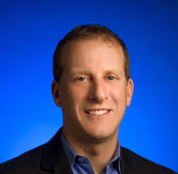 | VC General Partner | GV (Google Ventures) | Director, Education projects | Google | was a GP at GV since its inception in 2009 - fortune.com |
| 160707Jul 7 | Kevin Turner | | COO, Sales | Microsoft | CEO | Citadel Securities | responsibilities will be split among Jean-Philippe Courtois, Judson Althoff, Chris Capossela, Kurt DelBene & CFO Amy Hood - recode.net |
| 160706Jul 6 | Rich Heley | | VP Product Technology | Tesla | Unknown, Building 8 | Facebook | will report to Regina Dugan - bloomberg.com |
| 160701Jul 1 | Brogan BamBrogan | | Co-founder, CTO | Hyperloop One | | | Engineering President Josh Giegel has been promoted and will assume BamBrogan’s role - recode.net |
| 160630Jun 30 | Ben Cunningham | | Engineering Tech Lead | Facebook | | | worked on Instant Articles and Paper - facebook.com |
| 160629Jun 29 | Amy Whitney | | Product Designer | GitHub | Product Designer | Facebook | will be based in London - twitter.com |
| 160628Jun 28 | Alessandro Sabatelli | | Designer | Apple | Director AR and VR, Cortex | Twitter | Twitter also aquiring his VR-focused startup IXOMOXI - fortune.com |
| 160627Jun 27 | Tim Collins | | VP Global Community Operations | Uber | VP Global Logistics | Amazon | will be replaced by Austin Geidt - recode.net |
| 160627Jun 27 | Stephen Greenwood | | Associate Creative Director | Reddit | Director Creative Development | Discovery Digital Networks | was hired to make original video for Reddit - recode.net |
| 160624Jun 24 | Kevin Lo | 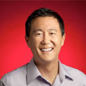 | GM, Google Fiber | Google | Director Infrastructure Connectivity and Investments | Facebook | will report to Jason Taylor, Facebook’s VP for infrastructure - recode.net |
| 160623Jun 23 | Kobie Fuller | | VC Principal | Accel Partners | VC General Partner | Upfront Ventures | will focus on VR and marketing - venturebeat.com |
| 160622Jun 22 | Lin-Hua Wu | | Head of Corporate Communications | Square | VP Communications | Dropbox | will oversee a 20-person team and report to COO Dennis Woodside - linkedin.com |
| 160617Jun 17 | Matt Cutts | | Distinguished Engineer, Head of Webspam | Google | Consultant | Government: US Digital Service | spending a few months focused on Defense Digital Service at the Pentagon after 15 years at Google - mattcutts.com |
| 160617Jun 17 | Zara Rahim | | Public Policy and Communications | Uber | Communications | Hillary for America | now Brooklyn based at Clinton campaign headquarters - twitter.com |
| 160616Jun 16 | Damien Hooper-Campbell | 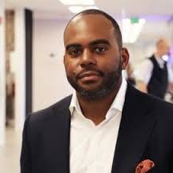 | Head of Diversity and Inclusion | Uber | Chief Diversity Officer | eBay | will report to eBay SVP of Human Resources and Chief People Officer Kristin Yetto - techcrunch.com |
| 160613Jun 13 | Katie Jacobs Stanton | | VP Global Media | Twitter | CMO | Color Genomics | left Twitter in January 2016 - medium.com |
| 160608Jun 8 | Ricky Van Veen | | Co-founder | CollegeHumor | Head of Global Creative Strategy | Facebook | will report to Content VP Nick Grudin - recode.net |
| 160608Jun 8 | Peter Shen | | CFO | Inotera Memories | CFO, Company Spokesperson | HTC | replaces incumbent Chialin Chang, who will now revert to running the sales business. - techcrunch.com |
| 160608Jun 8 | Paul Hennessy | | CEO | Priceline.com | CEO | Vroom | Hennessy replaces Allon Bloch and will be replaced by Priceline COO and CMO Brett Keller - wsj.com |
| 160608Jun 8 | Marvin Ammori | | Principal Counsel | The Ammori Group | General Counsel | Hyperloop One | previously represented Google, Apple, Dropbox, Automattic, Tumblr, Twitter on tech and policy issues - twitter.com |
| 160607Jun 7 | Kerry Trainor | 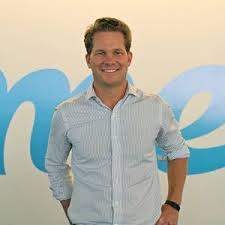 | CEO | Vimeo | | | IAC chief executive Joey Levin has been named interim CEO - venturebeat.com |
| 160607Jun 7 | Paul Eremenko | | Director of Engineering, Advanced Technology & Projects | Google | CTO | Airbus Group | "was CEO
A^3 by Airbus Group in interim" - venturebeat.com |
| 160606Jun 6 | Troy Carter | | CEO, Music Manager | Atom Factory | Unknown | Spotify | will report to Stefan Blom, Spotify's chief content and strategy officer. - recode.net |
| 160604Jun 4 | Abhi Khune | | Head of Platform Engineering | Pinterest | Senior Engineering Manager, Data Infrastructure | Uber | working at Uber's Palo Alto office - twitter.com |
| 160603Jun 3 | Tony Fadell | | CEO, Nest | Google | | | replaced by Marwan Fawaz - nest.com |
| 160603Jun 3 | Tracy Chou | | Software Engineer | Pinterest | | | also a diversity advocate, heading to NYC - twitter.com |
| 160603Jun 3 | Rachel Myers | | Software Engineer | GitHub | Co-founder | Opsolutely | is also a Board member of RailsBridge - twitter.com |
| 160602Jun 2 | Adora Cheung | | CEO, Co-founder | Homejoy | VC Partner | Y Combinator | YC-backed startup Homejoy shut down in July 2015 - blog.ycombinator.com |
| 160602Jun 2 | Peter Wilson | | VP Engineering | Google | VP Engineering | OfferUp | Previously at Facebook and Microsoft, based in Kirkland/Bellevue near Seattle - geekwire.com |
| 160601Jun 1 | Mario Mazzola | | Chief Development Officer | Cisco Systems | | | departing after 23 years at Cisco, said to be moving into an internal advisory role - recode.net |
| 160601Jun 1 | Prem Jain | | SVP SAVTG, GM Insieme | Cisco Systems | | | resigning after 23 years along with the legendary MPLS team - wsj.com |
| 160601Jun 1 | Luca Cafiero | | SVP, GM Switching, Voice and Storage | Cisco Systems | | | resigning after 23 years along with the legendary MPLS team - wsj.com |
| 160601Jun 1 | Soni Jiandani | | SVP Marketing, Insieme Networks | Cisco Systems | | | said to be departing as part of the MPLS shakeup, but her role remains unclear - wsj.com |
| 160601Jun 1 | Sam Schillace | | SVP Engineering | Box | VP Engineering for Industry Solutions | Google | returning to Google, will be working on Google’s cloud products, reporting to Diane Greene - bloomberg.com |
| 160526May 26 | Jana Messerschmidt | | VP Global Business Development & Platform | Twitter | | | spent 6 years at Twitter, also founding partner of the #Angels investment team - recode.net |
| 160526May 26 | Nathan Hubbard | 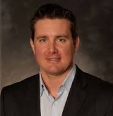 | VP Global Media and Commerce | Twitter | | | was previously CEO of Ticketmaster - twitter.com |
| 160525May 25 | Betsy Lack |  | Editor | Vanity Fair | Head of Global Brand Strategy | Snapchat | will report to Snapchat's head of strategy, Imran Khan - recode.net |
| 160525May 25 | Robert Frati | | SVP Commercial Sales, SMB | Salesforce | VP Sales | Slack | will be Slack's first head of sales - venturebeat.com |
| 160524May 24 | Nate Keller | | Founding Executive Chef | Sprig | Director of Food | Zesty | previously executive chef at Google - techcrunch.com |
| 160524May 24 | Brandon Walkin | | Product Designer | Facebook | Designer, Human Interfaces | Apple | spent 6 years at Facebook - twitter.com |
| 160524May 24 | Adam Wu | | VP Cloud Engineering | Centrify | VP Engineering | Stormpath | previously at Microsoft - prweb.com |
| 160523May 23 | Tariq Shaukat | | Chief Commercial Officer | Caesars Entertainment Corp | President of Enterprise Sales | Google | Source: recode.net |
| 160523May 23 | Brian "Skip" Schipper | | VP Human Resources | Twitter | Chief People Officer | Yext | will oversee global HR for the New York-based pre-IPO startup - techcrunch.com |
| 160523May 23 | Andrew Hogue | | SVP Engineering | Foursquare | VP Engineering | Blue Apron | is also a VC Principal at Hudson River Angels, based in New York City - internetretailer.com |
| 160516May 16 | Anthony Levandowski | | Software Engineer, Self-driving car | Google | Co-founder | Otto | the self-driving truck startup has been acquired by Uber - blog.ot.to |
| 160511May 11 | Jeremy Hitchcock | | CEO | Dyn | | | Jim Baum will take over responsibilities, but not the role - techcrunch.com |
| 160509May 9 | Josh Carpenter | | Lead, MozVR Team | Mozilla | UX Designer for Immersive Computing | Google | will work on WebVR Virtual Reality, with Brandon Jones and Boris Smus under Clay Bavor - twitter.com |
| 160506May 6 | Donna Boyer | | Chief Product Officer, Interim CMO | Blurb | Director of Product, Host & Homes | Airbnb | first product director focused on hosts - venturebeat.com |
| 160505May 5 | Michael Lopp | | Head of Engineering | Pinterest | VP Engineering | Slack | also author of engineering books Managing Humans and Being Geek under pen name Rands - forbes.com |
| 160505May 5 | Matt Glotzbach | | VP Product Management | YouTube (Google) | CEO | Quizlet | stepping into CEO role after over 10 years at Google - techcrunch.com |
| 160504May 4 | Amit Kumar | | Engineering Manager | Twitter | VC Venture Partner | Accel Partners | was co-founder of CardSpring, acquired by Twitter in 2010, and Betable - twitter.com |
| 160503May 3 | Yoky Matsuoka | | Executive, Apple Health | Apple | | | joined Apple from Nest in May, reported to COO Jeff Williams - bloomberg.com |
| 160503May 3 | Evan Hansen | | Editor | Medium | Editor-in-Chief, Periscope | Twitter | Source: theverge.com |
| 160502May 2 | Ashwin Ram | | CIO, Interactive Intelligence & Augmented Social Cognition | Xerox PARC | Senior Manager, Alexa AI | Amazon | will lead AI R & D team for Alexa, the conversational agent powering Amazon Echo - techcrunch.com |
| 160428Apr 28 | Darren Huston | | CEO | Priceline Group, Booking.com | | | Jeffrey Boyd, the former CEO and Chairman of the Board, is taking over as interim CEO - bloomberg.com |
| 160428Apr 28 | Michael Brown | | CEO | Symantec | | | will be replaced by Blue Coat Systems CEO Greg Clark - fortune.com |
| 160427Apr 27 | Bill Fathers | | EVP, GM Cloud Services | VMware | VC Senior Operating Partner, PE | Stonepeak Infrastructure Partners | will be replaced by Cloud co-GMs, Allwyn Sequeira and Laura Ortman - fortune.com |
| 160426Apr 26 | Robert Parker | | Director Engineering | Amazon | SVP Engineering | SmartThings | intends to bring his Alexa, the Fire TV Stick, and Prime Music experience to smart home market - theverge.com |
| 160426Apr 26 | Matt McGowan | | Head of Strategy | Google | President | Adestra | was Head of Strategy for the America's Ad Agency business - adestra.com |
| 160425Apr 25 | Zeena Freeman | | President | Black Diamond Inc. | COO | Shyp | new role, current VP Operations will report to her - fortune.com |
| 160425Apr 25 | Karen Appleton | | SVP Industry | Box | Senior Director | Apple | Appleton spent 9 years at Box, was employee no. 8 - medium.com |
| 160424Apr 24 | Liang Heng | | Staff Software Engineer, Autopilot | Tesla | Software Architect, Autonomous Driving | Baidu USA | joining newly formed Silicon Valley based self-driving car unit - techtimes.com |
| 160422Apr 22 | Sebastian Thrun | | CEO, Founder | Udacity | | | replaced by COO Vishal Makhijani - fortune.com |
| 160419Apr 19 | Chris Porritt | | VP Engineering | Tesla | Unknown, Project Titan | Apple | working in automotive division. said to have left Tesla in September 2015 - electrek.co |
| 160418Apr 18 | Mike Vernal | | VP Engineering, Search and Platform | Facebook | VC Investment Partner | Sequoia Capital | was at Facebook for 8 years, reported directly to CEO Mark Zuckerberg - recode.net |
| 160415Apr 15 | Elissa Murphy | | CTO, EVP | GoDaddy | VP Engineering | Google | GoDaddy’s chief information and infrastructure officer Arne Josefsberg will take over Murphy’s position - fortune.com |
| 160414Apr 14 | Cynthia Hogan | | Lobbyist | NFL | VP for Public Policy and Government Affairs | Apple | will report to Lisa Jackson, Apple’s vice president of environment, policy and social initiatives - politico.com |
| 160414Apr 14 | Danny Coster | 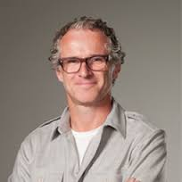 | Designer, Industrial Design | Apple | VP Design | GoPro | will report to CEO Nick Woodman, head hardware design team - theinformation.com |
| 160413Apr 13 | Regina Dugan | | Head, Advanced Technology And Products | Google | Head, Building 8 | Facebook | will lead new hardware R&D group, former head of DARPA - forbes.com |
| 160413Apr 13 | Leah Busque | | CEO, Founder | TaskRabbit | | | resigning after 8 years as CEO to be replaced by COO Stacy Brown-Philpot - medium.com |
| 160412Apr 12 | Rob Chesnut | | SVP and General Counsel | Chegg | General Counsel | Airbnb | will report to Chief Business and Legal Affairs Officer Belinda Johnson - airbnb.com |
| 160411Apr 11 | Ty Roberts | | Co-founder | Gracenote | CTO | Universal Music Group | will report to Universal’s digital strategy boss, Michael Nash - recode.net |
| 160406Apr 6 | Tom Chernetsky | | CTO | YikYak | | | Engineering will be led by VP Engineering Michael Morrissey - techcrunch.com |
| 160405Apr 5 | Jim Wilkinson | | SVP International Corporate Affairs, GM, Head of US Operations | Alibaba Group | Chairman, CEO | TrailRunner International | starting a consulting firm, will be replaced by Jennifer Kuperman - prweek.com |
| 160404Apr 4 | Kirk Skaugen | | SVP, GM Client Computing Group | Intel Corporation | | | had been at Intel since 1992, will be replaced by Navin Shenoy - simplecore.intel.com |
| 160404Apr 4 | Doug Davis | | SVP, GM Internet of Things Group | Intel Corporation | | | retiring after 32 years at Intel - simplecore.intel.com |
| 160404Apr 4 | Jay Vijayan | | Chief Information Officer | Tesla Motors | Co-founder | Stealth Startup | departing after 4 years at Tesla - blogs.wsj.com |
| 160404Apr 4 | Siobhan Quinn | | CEO, Co-founder | Parenthoods | Senior Product Manager | YouTube | working on YouTube comments. Parenthoods was a YC S14 startup - facebook.com |
| 160401Apr 1 | Brian Ford | | Software Engineer, AngularJS | Google | | | will work independently, Google work to be continued by Misko Hevery and Victor Berchet - twitter.com |
| 160331Mar 31 | Jahan Khanna | | CTO, Co-founder | General Motors | Product Lead, Vehicle Solutions | Uber | Sidecar shut down in December 2015 then sold itself to GM - fortune.com |
| 160331Mar 31 | Ty Smith | | Android Engineering Tech Lead | Twitter | Engineering Tech Lead | Uber | working on Android, Mobile Developer Platform - twitter.com |
| 160331Mar 31 | Sandy Gould | | SVP Talent Acquisition and Development | Yahoo | | | previously VP Recruiting at Disney/ABC - recode.net |
| 160331Mar 31 | Mike Buckley | | VP Global Business Communications | Facebook | Co-founder | New Frontier Foods | returning to the company he cofounded in 2012, will be replaced by Caryn Marooney - recode.net |
| 160329Mar 29 | Hannah Donovan | | Product & Design Lead | Drip | GM, Vine | Twitter | replacing former GM Jason Toff - recode.net |
| 160329Mar 29 | Cyan Banister |  | Angel investor | | VC Investment Partner | Founders Fund | Source: bloomberg.com |
| 160329Mar 29 | Karun Arya | | Head of Communications, Southeast Asia & India | Uber | Director of Communications, APAC | Discovery Networks Asia Pacific | replaced by Amy Kunrojpanya - recode.net |
| 160329Mar 29 | Amy Kunrojpanya | | Head of Communications & Public Affairs, Thailand, Vietnam, Indonesia | Google | Director of Policy & Communications, Asia Pacific | Uber | replacing Karun Arya - recode.net |
| 160328Mar 28 | Mark Whitten | | Chief Product Officer | Sonos | VP, GM | Amazon | departure amid layoffs at Sonos. previously CPO for Xbox at Microsoft - techinsider.io |
| 160324Mar 24 | Vadim Lavrusik | | Product Manager, Facebook Live and Mentions | Facebook | Co-founder | Alively | founding a startup with Vincent Tuscano currently in stealth - facebook.com |
| 160324Mar 24 | Aaron Patterson | | Senior Software Architect | RedHat | Ruby and Rails Maintainer | GitHub | is also a core Ruby and Rails developer and speaker, known as tenderlove - twitter.com |
| 160323Mar 23 | Pris Nasrat | | Site Reliability Engineer | Google | Engineering Manager | Etsy | New York based, took brief sabbatial at Recurse Center - twitter.com |
| 160321Mar 21 | Maria Zhang | | VP Engineering, Mobile and Emerging Products | Yahoo | VP Engineering | Tinder | was recently vindicated from sexual harrassment claims by a Yahoo employee - recode.net |
| 160321Mar 21 | Derek Callow | | Director & Global Head, Partner Marketing | YouTube | VP International | Tinder | was previously Marketing Director for Google in Southeast Asia - recode.net |
| 160321Mar 21 | Ferrell McDonald | | SVP, Head of Originals Marketing | Starz Entertainment | CMO | Tinder | previously an independent consulting marketing executive - prnewswire.com |
| 160321Mar 21 | James Kim | | VP Finance | TigerText | VP Finance | Tinder | previously VP of Financial Planning and Analysis at the Rubicon Project - prnewswire.com |
| 160318Mar 18 | George Stathakopoulos | | VP Information Security | Amazon | VP Corporate Information Security | Apple | reports to Apple’s CFO, previously Microsoft Product Security GM - fortune.com |
| 160318Mar 18 | Dave Engberg | | CTO | Evernote | CTO | Livongo | will depart in May after almost 9 years at Evernote, replaced by Anirban Kundu - techcrunch.com |
| 160317Mar 17 | Erik Wrobel | | VP Product Management | VMware | Chief Product Officer | Evernote | departs after 10 years at VMware - blog.evernote.com |
| 160315Mar 15 | Tom Conrad | | EVP | Pandora | VP Product | Snapchat | will report directly to CEO Evan Spiegel - recode.net |
| 160315Mar 15 | Alan Warren | | VP Engineering | Google | CTO, SVP Engineering | Oscar Insurance | will oversee a team of around 55 engineers - recode.net |
| 160311Mar 11 | Cadran Cowansage | | Senior Software Engineer | MongoDB | Software Engineer | Y Combinator | will be based in San Francisco - blog.ycombinator.com |
| 160311Mar 11 | Finbarr Taylor | | Co-founder, CTO | Shogun | Software Engineer | Y Combinator | previously founder of a CMS for websites startup - blog.ycombinator.com |
| 160310Mar 10 | Yamini Rangan | | VP Sales Strategy and Operations | Workday | Global Head of Revenue Excellence and Operations | Dropbox | will report to VP RevenueThomas Hansen - theinformation.com |
| 160310Mar 10 | Eddie O'Brien | | CEO Americas | Arvato Bertelsmann | Global Head of Customer Success | Dropbox | will report to VP RevenueThomas Hansen - theinformation.com |
| 160310Mar 10 | Robert Scoble | | Evangelist | Rackspace | Entrepreneur in Residence | UploadVR | is also a prolific blogger and tech evangelist - venturebeat.com |
| 160310Mar 10 | Andrew Crow | | Head of Design | Uber | Head of Design | Medium | joined Uber in August 2014 - medium.com |
| 160307Mar 7 | Chris Poole | | Founder | 4chan | Unknown | Google | works under Bradley Horowitz, VP of streams, photos and sharing - chrishateswriting.com |
| 160307Mar 7 | Mark Pincus | | CEO, Founder | Zynga | | | stepping down for the second time, will be replaced by Board member Frank Gibeau - blog.zynga.com |
| 160304Mar 4 | David King | 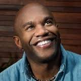 | Director, Office of Civil Rights and Diversity | Peace Corp | Director of Diversity and Belonging | Airbnb | filling a new role that Airbnb pledged to hire - venturebeat.com |
| 160301Mar 1 | Carl Eschenbach | 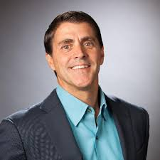 | President, COO | VMware | VC Investment Partner | Sequoia Capital | Maurizio Carli has been promoted to EVP Worldwide Sales - fortune.com |
| 160229Feb 29 | Sriram Krishnan | | Product, Audience Network | Facebook | Unknown | Snap (Snapchat) | will be part of growth and revenue team - recode.net |
| 160229Feb 29 | Arthur Valdez | | VP Operations International Expansion | Amazon | EVP, Chief Supply Chain & Logistics Officer | Target | departing Amazon after 16 years, will report to COO John Mulligan - corporate.target.com |
| 160226Feb 26 | Andy Chung | | Product Designer | Facebook | | | led design of Reactions emoji - twitter.com |
| 160226Feb 26 | Amit Singhal | | SVP Engineering, Google Fellow, Head of Search | Google | | | retiring after 15 years at Google. will be replaced by John Giannandrea - plus.google.com |
| 160225Feb 25 | Mike Swartz | | Director Operational Excellence | Amazon | SVP Operations | Instacart | will oversee its personal shopper and delivery teams, reporting to CEO - recode.net |
| 160225Feb 25 | Susan Lally | | VP Engineering | GitHub | VP Engineering | McGraw-Hill Education | worked remotely from Boston - businessinsider.com |
| 160224Feb 24 | Martin Casado | | GM Networking & Security, SVP, Fellow | VMware | VC General Partner | Andreessen Horowitz | co-founded Nicira, bought by VMware for 1.26B - fortune.com |
| 160224Feb 24 | Brian Murphy |  | VP Engineering | The New York Times | CTO | Tumblr | will focus on mobile and report to President and COO Jeff D’Onofrio - recode.net |
| 160224Feb 24 | Coraline Ada Ehmke | | Principal Software Engineer | healthfinch | Application Software Engineer | GitHub | is also a prominent Ruby and open source developer and advocate - twitter.com |
| 160223Feb 23 | Corey Owens | | Head of Global Public Policy | Uber | Head of Global Public Policy | WeWork | was Head of North America Public Policy at DJI for several months between Uber and WeWork - therealdeal.com |
| 160219Feb 19 | Mike Matas | | Design Lead, Instant Articles & Facebook Paper | Facebook | | | departing with Sharon Hwang to focus on personal projects - twitter.com |
| 160219Feb 19 | Sharon Hwang Matas | | Graphic Design Lead, Instant Articles and Paper | Facebook | | | departing with Mike Matas to focus on personal projects - twitter.com |
| 160216Feb 16 | Jason Shellen | | Product | Pinterest | Head of Product, Platform | Slack | previously startup founder, VP Product at AOL, and Blogger acq by Google - twitter.com |
| 160216Feb 16 | Mark Luckie | | Manager of News and Journalism | Twitter | Head of Journalism and Media | Reddit | left Twitter in May 2015 - nbcnews.com |
| 160216Feb 16 | Hayley Barna | | Co-founder | Birchbox | VC Investment Partner | First Round Capital | Barna fills the venture partner role vacated by Wiley Cerilli - recode.net |
| 160215Feb 15 | Michelle Wagner | | Head of People Success | Elementum SCM | SVP People Operations | Evernote | previously SVP Operations at Ooyala - blog.evernote.com |
| 160210Feb 10 | Jeff Huber | | SVP Engineering, Google X | Google | CEO | Grail | After losing his wife to cancer, Huber will lead the cancer diagnostic startup - technologyreview.com |
| 160209Feb 9 | James Barrese | | CTO, SVP | PayPal | | | CTO position replaced by Sri Shivananda and Engineering by Bill Ready - techcrunch.com |
| 160208Feb 8 | Scott Belsky | | CEO, Behance, VP Product | Adobe | VC General Partner | Benchmark | 1 of 6 Benchmark GPs, author of business book "Making Ideas Happen" - abovethecrowd.com |
| 160208Feb 8 | Parker Conrad | | CEO | Zenefits | | | will be replaced by COO David Sacks - recode.net |
| 160208Feb 8 | Rob Krolik | | CFO | Yelp | | | replaced by Lanny Baker in April - fastcompany.com |
| 160208Feb 8 | Adam Marchick | | CEO | Kahuna | CEO, Co-founder | VoiceLabs | running startup focused on Amazon Alexa and voice applications in the home - fortune.com |
| 160205Feb 5 | Toby Segaran | | Staff Software Engineer | Google | Lead Software Engineer | Reddit | is also author of the O'Reilly book Programming Collective Intelligence - twitter.com |
| 160126Jan 26 | Kevin Weil | | SVP Product | Twitter | Head of Product | Instagram | replacing Peter Deng - recode.net |
| 160126Jan 26 | Leslie Berland | | EVP Global Advertising, Marketing & Digital Partnerships | American Express | CMO Chief Marketing Officer | Twitter | will take over marketing led in interim by CFO Anthony Noto - twitter.com |
| 160126Jan 26 | Noah Weiss | | SVP Product Management | Foursquare | Head of Search, Learning, & Intelligence | Slack | working in NYC - medium.com |
| 160125Jan 25 | Nagraj Kashyap | | VC SVP, Global Head | Qualcomm Ventures | VC Corporate VP | Microsoft Ventures | resigning after leading Qualcomm Ventures for the past 12 years - fortune.com |
| 160125Jan 25 | Kelli Dragovich | | VP HR | GitHub | SVP, People Operations | Hired | was at GitHub for 18 months. Focused on diversity at Hired. - theinformation.com |
| 160115Jan 15 | Ben McCormack | | VP Global Cloud Operations | Armor Defense | VP Technical Operations | Evernote | brings background in cloud computing and security - blog.evernote.com |
| 160114Jan 14 | Leslie Miley | | Director of Engineering | Entelo | Director of Engineering | Slack | leaving after three months at Entelo - techcrunch.com |
| 160113Jan 13 | Zander Lurie | | SVP Entertainment | GoPro | CEO | SurveyMonkey | will replace current CEO Bill Veghte after death of former CEO Dave Goldberg - wsj.com |
| 160112Jan 12 | Peter X. Deng | | Director of Product | Instagram (Facebook) | Head of Product Management | Oculus (Facebook) | at Facebook since 2007, will work with Oculus co-founder Nate Mitchell - facebook.com |
| 160111Jan 11 | Geoff Belknap | | CSO Chief Security Officer | Palantir | CSO Chief Security Officer | Slack | new role, responsible for handling Slack’s physical and cybersecurity - techcrunch.com |
| 160111Jan 11 | Keith Adams | | Software Engineer | Facebook | Chief Architect | Slack | co-founded Facebook’s artificial research team and spent 8 years at VMware - fortune.com |
| 160106Jan 6 | Candice Morgan | 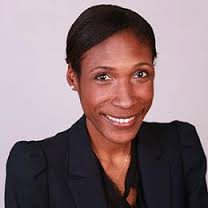 | Senior Director Global Member Services | Catalyst | Head of Diversity | Pinterest | will report to Pinterest’s head of recruiting - blogs.wsj.com |
| 160106Jan 6 | James Kuffner |  | Director, Robotics | Google | CTO | Toyota Research Institute | led Google’s robotics program and will focus on cloud computing at TRI - spectrum.ieee.org |
| 160104Jan 4 | Chris Messina | | Product Designer & Marketing Consultant | Depict | Developer Experience Lead | Uber | will work on Uber's Developer Platform ecosystem - medium.com |